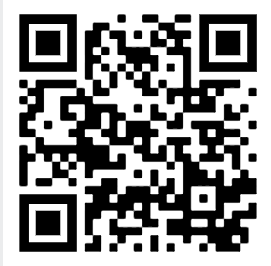

Join Us
Being part of the Arcanum Messores is one of the best
choices any speech and debate student can make.
In this community, we'll change the league for the better.
Why You Should Join

When you join the AM, you get to be a part of something bigger than yourself. So much of what we have yet to accomplish. When you get to become an AM member, you'll get to shape what this organization will become.
How to Join:
To join, you'll need to find me at a speech and debate tournament. This is easy, because I'm always wearing a massive black hat with a large feather on top.
How we will know you're with us: A feather shall indicate a memeber.